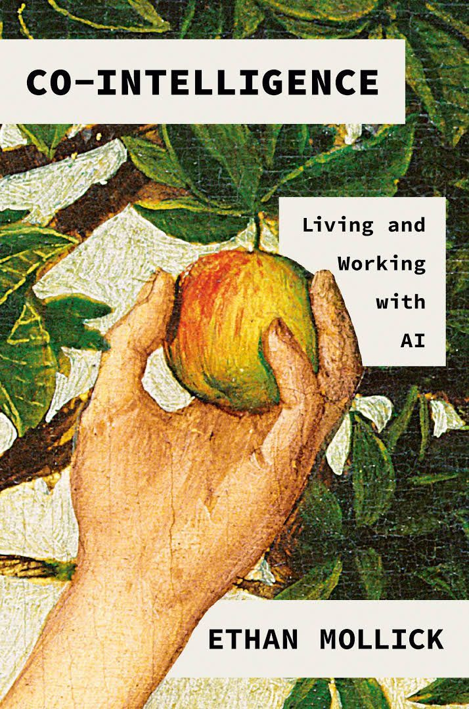
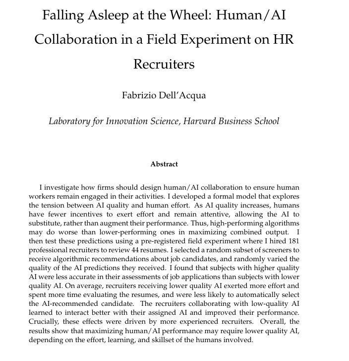
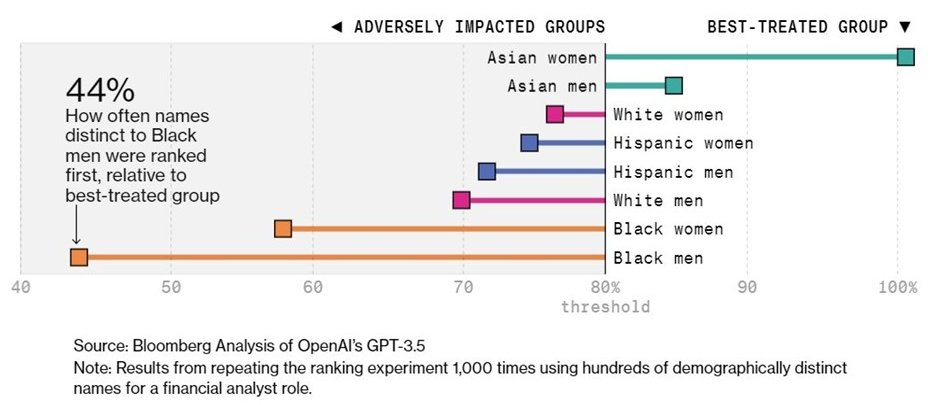
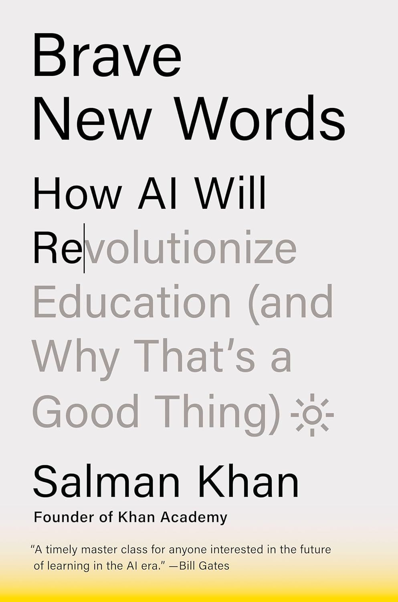

Społeczne wyzwania AI (I): praca i edukacja
Sztuczna inteligencja. Wyzwania społeczne, kulturowe i prawne
dr Karol Kasprowicz
Katedra Prawa Informatycznego i Zawodów Prawniczych, WPiA UMCS
Dzielnica 4 · spotkanie II · 6.11.2026
Plan spotkania
- Automatyzacja a augmentacja pracy. „Poszarpana granica” technologii: badania BCG i Harvard Business School
- Sektory i zawody najbardziej dotknięte zmianą, w tym zawody prawnicze
- Niewidzialna praca przy danych, prekaryzacja, propozycje dochodu podstawowego
- Edukacja: uczciwość akademicka, „iluzja efektywności poznawczej”, wyniki badania „Algorytm w Ławce Szkolnej”
- Przekwalifikowanie i kompetencje cyfrowe pracowników
Część I. Automatyzacja czy augmentacja?
Pytanie na początek
- Które zadania z Waszej przyszłej pracy (aplikant, asystent sędziego, radca w dziale prawnym) chętnie oddalibyście AI?
- Których nie oddalibyście nigdy? Dlaczego?
- Czy podział przebiega według trudności zadania, czy według czegoś innego?
Robotyka a przyszłość pracy
- Automatyzacja przekształca istniejące stanowiska i tworzy nowe
- Rośnie popyt na umiejętności zarządzania systemami AI i robotycznymi, ich utrzymania i optymalizacji
- Zmieniają się wymagania edukacyjne i struktura społeczno-ekonomiczna
- Przykład: centra logistyczne Amazona, w których roboty przewożą regały do pracowników
Automatyzacja a augmentacja
Automatyzacja
- maszyna przejmuje zadanie w całości
- człowiek znika z tego etapu procesu
- przykład: automatyczna anonimizacja orzeczeń
Augmentacja
- maszyna wspiera człowieka, który odpowiada za wynik
- zmienia się sposób wykonywania pracy
- przykład: projekt pisma przygotowany przez model i sprawdzony przez prawnika
Ważne: AI automatyzuje zadania, nie całe zawody. Zawód to wiązka zadań.
Ethan Mollick
- Profesor Wharton School, University of Pennsylvania
- Bada przedsiębiorczość, innowacje i wpływ AI na pracę
- Prowadzi blog One Useful Thing (oneusefulthing.org)
- Współautor eksperymentu z konsultantami Boston Consulting Group

Źródło: E. Mollick, Co-Intelligence, Portfolio 2024 (okładka).
Eksperyment BCG i Harvard Business School
- Dell’Acqua, McFowland, Mollick i in., „Navigating the Jagged Technological Frontier” (HBS Working Paper 24-013, 2023)
- 758 konsultantów Boston Consulting Group
- 18 realistycznych zadań: kreatywnych, analitycznych, pisarskich, marketingowych
- Losowy podział: bez AI, z GPT-4, z GPT-4 i krótkim szkoleniem z promptowania
- Jedno dodatkowe zadanie celowo wybrano tak, by leżało poza możliwościami modelu
Wewnątrz granicy: szybciej, więcej, lepiej

Wykres własny w stylu NEO-LUBLIN; dane i źródło na wykresie.
AI wyrównuje poziom

Wykres własny w stylu NEO-LUBLIN; dane i źródło na wykresie.
Poza granicą: AI szkodzi

- Z AI poprawnych rozwiązań było o 19 pkt proc. mniej
- Model dawał przekonujące, ale błędne odpowiedzi, a ludzie je przyjmowali
- Granica jest poszarpana i nikt nie dostaje jej mapy
Centaury i cyborgi
Centaur
- wyraźny podział pracy
- człowiek decyduje, które zadania oddaje maszynie
- np. model streszcza akta, prawnik pisze argumentację
Cyborg
- ścisłe splecenie pracy człowieka i modelu
- ciągła iteracja zdanie po zdaniu
- np. wspólne redagowanie umowy z modelem
Obie strategie wymagają weryfikacji wyniku przez człowieka.
„Zasypianie za kierownicą”

- Eksperyment terenowy: 181 rekruterów ocenia 44 CV
- Część dostaje rekomendacje AI o różnej jakości
- Rekruterzy z lepszą AI byli mniej dokładni
- Słabsza AI zmuszała do wysiłku i uczenia się
- Efekt najsilniejszy u doświadczonych rekruterów
Źródło: F. Dell’Acqua, „Falling Asleep at the Wheel: Human/AI Collaboration in a Field Experiment on HR Recruiters”, Laboratory for Innovation Science, Harvard Business School (working paper).
Po BCG: „cybernetyczny kolega z zespołu”
- Eksperyment terenowy w Procter & Gamble (Dell’Acqua, Mollick i in., Organization Science 2026)
- Osoba pracująca z AI dorównała zespołowi bez AI; najlepsze wyniki osiągały zespoły z AI
- Praca z AI zajmowała mniej czasu (ok. 16% w wersji roboczej badania)
- Więcej badań grupy Mollicka (Wharton Generative AI Labs): AIQ, zakładka Badania
Rzecznicy patentowi z AI: ekspertyza rośnie czy maleje?
- Trzymiesięczny eksperyment z losowaniem: 133 prawników patentowych z 11 kancelarii w USA, prace oceniane „na ślepo” przez rzeczników (Autor i in., NBER 2026)
- Z AI jakość pracy wzrosła, najbardziej u młodszych prawników
- Potem bez AI: starsi zachowali przewagę, młodsi średnio nie
- Wniosek: podstawowa wiedza fachowa warunkuje trwałą korzyść z AI
Google: jak naprawdę używamy AI w pracy?
- ATLAS (Google AI & Economy, 2026): 15 mln interakcji z Gemini przypisanych do ponad 800 zawodów
- AI pojawia się w zawodach obejmujących ok. 88% zatrudnienia w USA, ale płytko i głównie we współpracy z człowiekiem
- Spadek ofert pracy dla młodych w zawodach „narażonych na AI” zaczął się przed ChatGPT: ostrożnie z prostymi wnioskami
Część II. Kogo dotyczy zmiana?
Ekspozycja zawodów na AI generatywną
- Raport MOP i NASK (20.05.2025): 25% zatrudnienia na świecie w zawodach potencjalnie narażonych na AI generatywną
- W krajach wysokodochodowych: 34%
- Najwyższa kategoria ekspozycji: 3,3% zatrudnienia na świecie
- Najbardziej narażone: prace biurowe i administracyjne; częściej wykonują je kobiety
- Wniosek autorów: ekspozycja to najczęściej przekształcenie pracy, nie jej utrata
Kto jest najbardziej narażony na generatywną AI?

Kobiety są bardziej narażone na generatywną AI

Prognozy rynku pracy do 2030 r.
- World Economic Forum, Future of Jobs Report 2025 (styczeń 2025), ankieta wśród ponad 1000 pracodawców
- 170 mln nowych miejsc pracy, 92 mln zlikwidowanych, saldo +78 mln
- Zmiana dotknie ok. 22% miejsc pracy
- Ok. 39% kluczowych umiejętności zmieni się do 2030 r.
- 41% pracodawców planuje redukcje zatrudnienia tam, gdzie AI automatyzuje zadania
Ile miejsc pracy tworzy i likwiduje AI?

Zawody prawnicze
- Goldman Sachs (2023): w USA AI generatywna może zautomatyzować ok. 44% zadań w pracy prawniczej (więcej tylko w pracy biurowo-administracyjnej, 46%)
- Zadania najbardziej podatne: wyszukiwanie, streszczanie, przegląd dokumentów (due diligence), pierwsze wersje pism
- Zadania najmniej podatne: relacja z klientem, negocjacje, wystąpienia przed sądem, osąd etyczny i odpowiedzialność
- R. i D. Susskind: profesje nie znikną, ale zmieni się sposób dostarczania wiedzy eksperckiej
Rekrutacja z AI
- Ankieta LinkedIn (2023): 2 na 3 rekruterów liczy, że AI generatywna przyspieszy lub ułatwi pozyskiwanie kandydatów
- Systemy AI filtrują CV, układają rankingi kandydatów, prowadzą wstępne rozmowy
- Pytanie: czy maszyna ocenia kompetencje, czy uczy się wzorca dawnych decyzji?
Test Bloomberga: GPT-3.5 jako rekruter

Źródło: Bloomberg, „OpenAI’s GPT Is a Recruiter’s Dream Tool. Tests Show There’s Racial Bias”, marzec 2024.
Rekrutacja w świetle prawa
- AI Act, zał. III pkt 4: systemy do rekrutacji, filtrowania podań, oceny kandydatów, decyzji o awansie i zwolnieniu, przydziału zadań i monitorowania pracowników to systemy wysokiego ryzyka (obowiązki od 2.12.2027 po zmianach z rozporządzenia 2026/1744)
- Art. 5 ust. 1 lit. f AI Act: zakaz rozpoznawania emocji w miejscu pracy i w edukacji (poza względami medycznymi i bezpieczeństwa), stosowany od 2.02.2025
- Art. 26 ust. 7 AI Act: pracodawca informuje przedstawicieli pracowników i pracowników przed użyciem systemu wysokiego ryzyka w miejscu pracy
- RODO, art. 22: prawo, by nie podlegać decyzji opartej wyłącznie na zautomatyzowanym przetwarzaniu
- Kodeks pracy, art. 18³ᵃ i n.: zakaz dyskryminacji także na etapie naboru
Tłumacze, lektorzy, dubbing
- Narzędzia takie jak Rask AI tłumaczą nagranie i podkładają głos mówiącego w innym języku
- ElevenLabs (założyciele: Mateusz Staniszewski i Piotr Dąbkowski) klonuje i syntetyzuje głos
- Zagrożone zawody: tłumacze, lektorzy, aktorzy dubbingowi
- Pytania prawne: ochrona głosu jako dobra osobistego (art. 23 k.c.), zgoda na użycie wizerunku i głosu, obowiązek oznaczania treści syntetycznych (art. 50 AI Act)
AI w administracji publicznej
- Potencjał: szybsze procedury, personalizacja usług, lepsze decyzje oparte na danych
- Ryzyka: prywatność, bezpieczeństwo danych, przejrzystość decyzji
- Zmiana pracy urzędnika: mniej przepisywania, więcej kontroli wyników
- Granica: decyzja administracyjna musi mieć ludzkiego autora i uzasadnienie
Część III. Niewidzialna praca, prekaryzacja, dochód podstawowy
Niewidzialna praca przy danych
- Modele uczą się na danych, które ktoś musiał zebrać, opisać i ocenić
- Etykietowanie, moderacja, ocena odpowiedzi modeli (RLHF) wykonywane często za niskie stawki
- Przykład: pracownicy w Kenii oznaczający drastyczne treści dla OpenAI za mniej niż 2 dolary za godzinę (TIME, styczeń 2023)
- „Fałszomatyzacja” (fauxtomation, A. Taylor): praca ludzi przedstawiana jako działanie maszyny
Prekaryzacja
- Krótkie umowy, brak gwarancji zatrudnienia i zabezpieczeń socjalnych
- Nieregularny czas pracy, niskie wynagrodzenia, zależność od platformy
- Zarządzanie przez algorytm: aplikacja przydziela zlecenia, ocenia i „dezaktywuje”
- Optymalizacja czy dehumanizacja?
- Prawo nie nadąża za dynamiką zmian
Dyrektywa o pracy za pośrednictwem platform
- Dyrektywa (UE) 2024/2831 z 23.10.2024, w mocy od 1.12.2024
- Transpozycja do 2.12.2026
- Domniemanie stosunku pracy, gdy fakty wskazują na kierownictwo i kontrolę
- Zarządzanie algorytmiczne: informacja o systemach monitorowania i decyzyjnych, nadzór człowieka, prawo do wyjaśnienia i przeglądu decyzji
- Zakaz przetwarzania m.in. danych o stanie emocjonalnym i prywatnych rozmowach pracownika
Dochód podstawowy?
- Geoffrey Hinton (BBC, maj 2024): doradzał rządowi brytyjskiemu wprowadzenie powszechnego dochodu podstawowego
- Argument: AI zwiększy produktywność i bogactwo, ale zyski trafią do najbogatszych, a nie do tych, którzy stracą pracę
- Eksperymenty: Finlandia (2017–2018, 2000 bezrobotnych), OpenResearch w USA (1000 osób, 1000 dolarów miesięcznie przez 3 lata)
- Spór: wolność od pracy czy utrata sensu i pozycji społecznej?
Świat różnych prędkości
Ilustracja z prezentacji „Praca i AI” [źródło do ustalenia].
- Dostęp do najlepszych modeli kosztuje
- Bogaci bogatsi, biedni biedniejsi?
- Nierówności regionów i państw
- Odpowiedzialność wielkich firm technologicznych
- Język: modele działają najlepiej po angielsku
Firmy i AI: Polska druga od końca w UE

Część IV. Edukacja
AI w szkole

Źródło: S. Khan, Brave New Words, Viking 2024 (okładka).
- Wizja: osobisty korepetytor dla każdego ucznia
- Ryzyko: AI na lekcji historii „wie” rzeczy, które nigdy się nie wydarzyły
- Pytanie: kto sprawdza korepetytora?
Khanmigo
Źródło: zrzut ekranu strony Khanmigo (Khan Academy), z prezentacji „Praca i AI”.
Projekt Maria: awatar AI dla edukacji
Fotografia Marii Skłodowskiej-Curie w laboratorium, aut. Henri Manuel, ok. 1920 r., domena publiczna (Wikimedia Commons).
- Awatar Marii Skłodowskiej-Curie mówiący jej głosem
- Twórcy: Historical Imagination Lab (HIL) i Humanverse
- Pokaz: Międzynarodowy Kongres „Innowacja jest kobietą. Nauka – Biznes – Edukacja”, Lublin, 21–22.10.2024 (80-lecie UMCS)
- Pytania: wiarygodność historyczna, zgoda, granica między edukacją a fikcją
Koniec czytania i pisania?
- D. Thompson (The Argument): prawdziwe zagrożenie to nie to, że AI nas prześcignie, ale to, że przestaniemy używać własnych umysłów
- Koniec pisania: pisanie nie następuje po myśleniu, pisanie jest myśleniem; oddając je AI, tracimy pracę zrozumienia
- Koniec czytania: spadek wyników czytania w USA (najniższe od 32 lat w badaniu NAEP 2024); studenci elitarnych uczelni nie czytają całych książek
- Utrata „supermocy poznawczej”: czytanie i pisanie jako fundament głębokiego myślenia (C. Newport, W. Ong, Orality and Literacy)
„Algorytm w Ławce Szkolnej”
- Badanie pilotażowe: K. Kasprowicz, H. Busz, Lublin, maj 2026
- 303 uczniów szkół średnich i studentów z województwa lubelskiego, głównie kierunków społeczno-prawnych
- 59,1% kobiet, 41,3% z terenów wiejskich
- Ankieta internetowa (CAWI), 69 pozycji
- ChatGPT stał się synonimem AI; najczęstsza pomoc: przedmioty humanistyczne, potem ścisłe
Pełny raport interaktywny na stronie kursu: „Algorytm w Ławce Szkolnej”
Studenci i AI: Polska za średnią unijną

Iluzja efektywności poznawczej

Rodzice, uczniowie i presja otoczenia
- Gotowość rodziców do zapłaty za narzędzia AI do nauki rośnie o ponad 60%, gdy dowiadują się, że korzystają z nich inni (Bursztyn, Imas i in., NBER 2025)
- Informacja o szkodach obniża ocenę AI, ale nie własny popyt; zwiększa poparcie dla zakazu AI w szkołach
- Mollick i Mollick: siedem ról AI na zajęciach (tutor, coach, mentor, kolega z zespołu, narzędzie, symulator, uczeń), zawsze ze studentem „w pętli”
Czy to plagiat?

- 72,3% obawia się błędnych treści, tylko 14,5% uznaje AI za rzetelne źródło
- Kiedy nieujawnione użycie AI jest uczciwe? Od „nigdy” do „jest uczciwe domyślnie”
Plagiat a AI: perspektywa prawna
- Plagiat w sensie prawa autorskiego (art. 115 ust. 1 pr. aut.): przywłaszczenie autorstwa cudzego utworu. Czy tekst z modelu jest „cudzym utworem”?
- Prawo o szkolnictwie wyższym i nauce, art. 77 ust. 5: stwierdzenie nieważności dyplomu, gdy autor pracy przypisał sobie autorstwo istotnego fragmentu cudzego utworu lub ustalenia naukowego
- Nierzetelność akademicka jest szersza niż plagiat: nieujawnienie użycia AI może naruszać regulaminy i kodeksy etyki uczelni
- Rozwiązanie z sylabusa tego kursu: AI dozwolona przy projekcie, ale z oświadczeniem o zakresie użycia
AI zamiast nauczyciela?
- 27% wybiera AI ze strachu, że pytanie zostanie uznane za banalne
- Pierwszy motyw to całodobowa dostępność
- 84,5%: AI ma być pomocą, nie głównym narzędziem nauki
- 74,6%: nauczyciele powinni uczyć mądrego korzystania z AI
- Uczniowie wybierają AI nie dlatego, że uczy lepiej, ale dlatego, że nie ocenia
Próżnia regulacyjna

Edukacja w AI Act
- Zał. III pkt 3: wysokiego ryzyka są systemy do decydowania o przyjęciu, oceniania efektów uczenia się, sterowania procesem uczenia, wykrywania niedozwolonych zachowań na egzaminach
- Art. 5 ust. 1 lit. f: zakaz rozpoznawania emocji uczniów i studentów
- Art. 4: kompetencje w zakresie AI (od 2.02.2025; po zmianach z 2026 r. obowiązek wspierania kompetencji)
- Wniosek: system „wykrywania AI” w pracach studentów może być systemem wysokiego ryzyka
Część V. Przekwalifikowanie i kompetencje
Kompetencje cyfrowe pracowników
- Pracodawcy szacują, że ok. 39% kluczowych umiejętności zmieni się do 2030 r. (WEF 2025)
- Art. 4 AI Act: dostawcy i podmioty stosujące wspierają kompetencje w zakresie AI swojego personelu
- Polska: ustawa z 3.07.2026 o systemach sztucznej inteligencji (Dz.U. 2026 poz. 1003), w mocy od 11.08.2026; nadzór KRiBSI; przepisy o kontroli i karach od 28.10.2026
- Uczenie się przez całe życie zamiast jednorazowego wykształcenia
Kompetencje prawnika w epoce AI
- Weryfikacja: sprawdzanie źródeł, sygnatur, cytatów
- Lokalizowanie granicy: które zadania leżą wewnątrz możliwości modelu, a które poza nimi
- Formułowanie poleceń i rozumienie, jak działa model językowy
- Ochrona tajemnicy zawodowej przy pracy z narzędziami chmurowymi
- Osąd i odpowiedzialność: tego nie da się oddać maszynie
Czy „sztuczki” promptowe działają?
- Cykl Prompting Science Reports (Wharton Generative AI Labs, 2025–2026)
- Uprzejmość, groźby ani obietnica napiwku nie poprawiają wyników w testach wiedzy
- Persona „eksperta”, także prawnika, zwykle nie zwiększa trafności
- Ukryte polecenia w ocenianym tekście potrafią zawyżać oceny wystawiane przez AI
- Dla prawnika liczy się weryfikacja, a nie „magiczny prompt”
Do dyskusji
- Czy uczelnia powinna zakazać AI przy pracach zaliczeniowych, czy uczyć korzystania z niej?
- Czy dochód podstawowy to odpowiedź na automatyzację pracy umysłowej?
- Czy aplikacja prawnicza powinna obejmować obowiązkowe szkolenie z AI?
Podsumowanie
- AI zmienia zadania, nie całe zawody; granica możliwości jest poszarpana
- Największe zyski osiągają słabsi pracownicy, największe ryzyko to „zasypianie” i błędy poza granicą
- Za automatyzacją stoi niewidzialna, często prekarna praca ludzi
- Uczniowie i studenci korzystają z AI szybciej, niż instytucje formułują zasady
- AI przyspiesza dostęp do odpowiedzi, ale nie zastępuje rozumienia
- Prawo reaguje: AI Act (praca i edukacja jako obszary wysokiego ryzyka), dyrektywa platformowa, art. 4 AI Act
Na następne spotkanie
- Temat: Społeczne wyzwania AI (II): etyka, uprzedzenia, przejrzystość
- Przeczytaj: lektury obowiązkowe modułu 05 (wytyczne HLEG 2019, wyrok TSUE w sprawie SCHUFA)
- Zadanie: poproś model generatywny o wygenerowanie obrazu „sędziego”, „prawnika” i „pielęgniarki”. Zanotuj, kogo przedstawia
- Quiz modułu 04 na stronie kursu